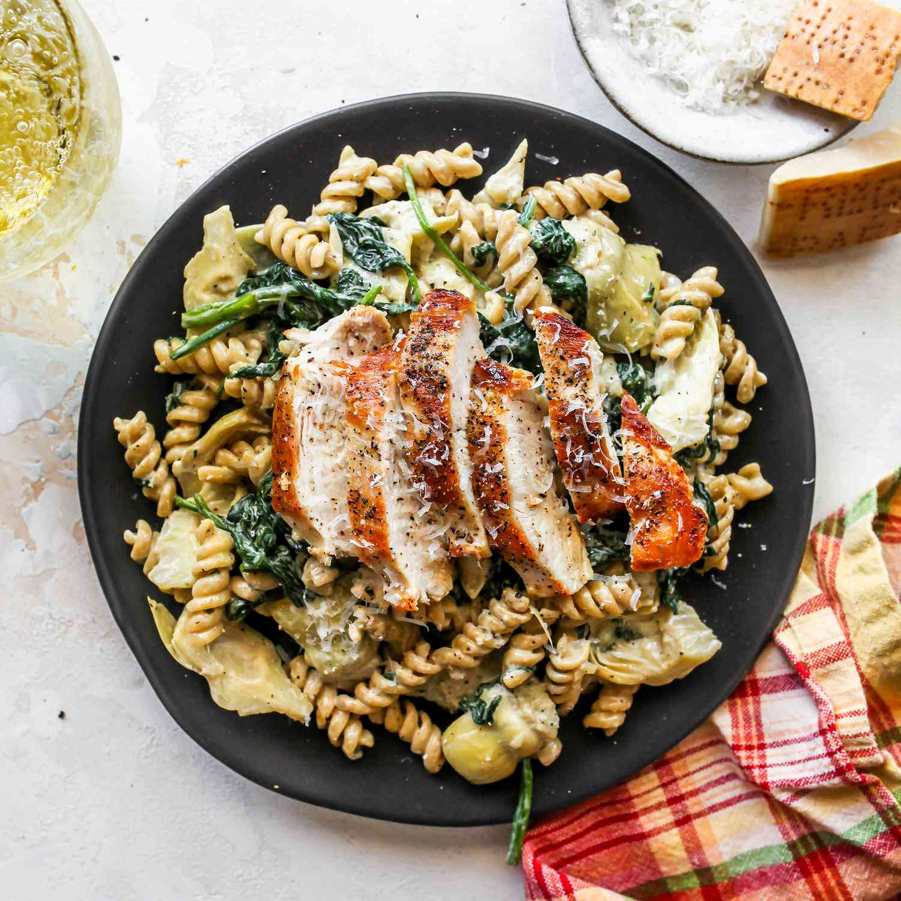

Chicken Pasta With Spinach, Tomatoes, And Artichokes

Whenever I crave some comfort food, this 15-Minute pan of penne chicken pasta is my go-to recipe. If you're like me and don't use
heavy cream much in your cooking, the great news is that you can still achieve a silky,
creamy sauce by combining milk, flour, parmesan cheese, and the essential pasta cooking water. Add sun-dried tomatoes, spinach, artichoke
hearts, and chicken to the mix, and you'll have an effortless penne pasta recipe that your entire family will adore.
This chicken pasta dish gives you the feeling of dining at a fancy restaurant with minimal effort. If you enjoyed my easy sun-dried tomato
pasta, this one will become a new favorite!
Ingredients
- Pasta: 8 ounces of pasta (penne recommended, but other options available)
- Chicken: Boneless skinless chicken breasts (or thighs if preferred)
- Extra virgin olive oil: Nocellara Italian EVOO is a delightful choice, complementing the dish's flavors
- Dried oregano: Adds a touch of earthiness
- Garlic: Mince a few cloves for a mildly spicy kick
- Sun-dried tomatoes: Impart sweetness and tanginess
- Cherry or grape tomatoes: Used whole to retain their shape and bright flavor
- Artichoke hearts: Canned artichoke hearts bring brininess, texture, and substance
- Whole milk: Creates a lighter sauce instead of heavy cream; dairy alternatives like cashew cream work too
- All-purpose flour: Used for thickening the sauce (gluten-free options available)
- Parmesan cheese: Freshly grated from a wedge or block for superior melting
- Baby spinach: 2 cups, wilts down during cooking
- Fresh parsley: Sprinkle generously for a burst of color and herbal freshness
How to make it:
- Cook the pasta. Add 8 ounces of penne pasta to a pot of salted boiling water and cook until al dente. Before draining, reserve about ½ cup of the pasta cooking water.
- Prepare the chicken. While the pasta cooks, pat dry 1 pound boneless skinless chicken breasts and slice them into strips or cubes. Season with kosher salt and black pepper to taste, and 2 teaspoons dried oregano.
- Cook the chicken. Heat 2 tablespoons of extra virgin olive oil in a large pan and add the chicken. Cook for 7 to 8 minutes, or until the chicken is done.
- Add tomatoes and artichokes. To the same pan, add 3 minced garlic cloves and ¼ cup chopped sun-dried tomatoes and toss for 30 seconds or so, then add 1 cup whole cherry or grape tomatoes and a drained 15-ounce can of artichoke hearts. Toss and turn the heat to medium-low.
- Make the sauce. Whisk together 1 cup whole milk, 2 tablespoons flour, and 1 cup grated parmesan cheese. Pour the mixture into the pan before adding 2 cups of baby spinach. Add 2 tablespoons of the pasta cooking water to the pan and stir to help the sauce thicken. You can add more pasta water if you need to.
- Finish and serve. Add the cooked pasta and mix to combine. Add ¼ cup chopped fresh parsley and serve.
Kitchen Swaps
This recipe is so versatile! If you realize you're missing an ingredient just look around your kitchen and swap it for something you do have on hand. The recipe will still taste delicious. Here are a few ideas to get you started:
- Use chicken thighs instead of breasts. Chicken thighs will just take a few minutes longer to cook than breasts.
- Skip the milk in favor of a non-dairy alternative like oat milk or cashew cream. The taste will be a little different (perhaps a tiny bit sweet). I recommend creamy, thicker non-dairy options: Almond milk, for example, is too watery. Think of it like the difference in richness between whole milk and skim milk.
- Change up the vegetables: Swap artichokes out for sliced mushrooms or chopped thin spears of asparagus. Use roughly chopped Roma tomatoes instead of cherry tomatoes. No spinach? Leave it out, and sprinkle some arugula onto the completed pasta dish along with fresh parsley.